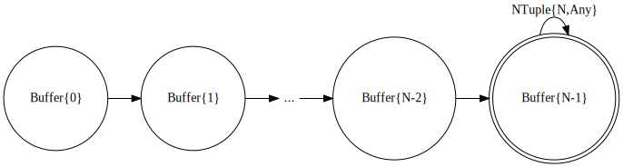
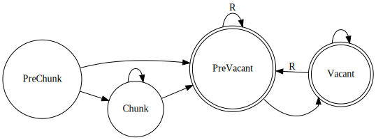

Accumulator type transitions as state machines
Some stateful transducers encode the "phase" of reduction as the type of the accumulator (its private state) to achieve efficient composable reductions. This is frequently true especially for parallelizable transducers (i.e., monoid transformations). See the linked docstrings for how each transducer works.
Here, we use the words accumulator and private state interchangeably. However, note that the state shown in the following diagrams only represent a single component in the "composite" accumulator as in acc of __foldl__(rf, acc, xs). For example, for a reducing function
rf = (Consecutive(1, 1) ⨟ ReducePartitionBy(f, rf1))'(rf2)composed of two transducers and one bottom reducing function rf2, the accumulator acc of it has the type transition that is a composition of Consecutive, ReducePartitionBy, and rf2.
Consecutive(N; step = 1)
Consecutive with step = 1 first accumulate N-1 elements and then start emitting tuples of size N. The private state of the transducer (in each base case) can be illustrated as follows.

For Consecutive(N; step = 1) transducer, the types of the private state are Buffer{0} (initial value), Buffer{1}, Buffer{2}, ..., Buffer{N-2}, and Buffer{N-1}, defined as:
Left{K} = NTuple{K,Any}
Right{K} = NTuple{K,Any}
Buffer{K} = Tuple{Left{K}, Right{K}} # K = 0, 1, ..., N-1The Right{K} component of Buffer tuple keeps the most recent K elements this transducer received. Once the state reaches to the type Buffer{N-1}, this transducer start emitting an N-tuple for each iteration (as indicated in the edge label NTuple{N,Any}). The loop with the accumulator of type Buffer{N-1} is the major component of the loop (i.e., it is used $O(\mathrm{length(xs)})$ times when reducing an input collection $\mathrm{xs}$). The "main loop" accumulators such as Buffer{N-1} are marked by the double circles. The accumulator types used only for $O(1)$ times are marked by the single circles and called prelude (ref is_prelude). See tail-call "function-barrier" pattern for how this information is used to generate efficient reductions.
The Left{K} component of Buffer tuple keeps the first K elements observed in this base case; this is used only in the parallel reduction, for combining to the base case left to this base case.
The private state of Consecutive with step > 1 additionally contains the counter. It does not contain Left since it cannot be used for parallel reductions.
WordsXF()
Parallel word count tutorial explains how to build a transducer WordsXF that can be used to split words in parallel, in a composable manner. The following diagram shows the transition of its accumulator type. It emits String only after it reaches Vacant, if a word followed by a space is observed (hence Union). See also the definition of extract(::Vacant, ::Vacant) in the tutorial.
ReducePartitionBy(f, rf, [init])
The private state of ReducePartitionBy starts as an Unseen() and then transition to Chunk at the first iteration. It then stays as a Chunk until the result of f(x) for input element x changes for the first time; at this point the state stays as a Vacant that holds the accumulators of rf for the first (left most) chunk and the current chunk. When the value of f(x) is changed for the second time or later, the accumulator of rf is completeed and emitted to the inner reducing function. This is denoted as by the edge label R? in the diagram. The question mark ? is for indicating that the result of type R is not emitted for every iteration; it's only when f(x) is changed.

The Vacant state keeps the first (pre-complete) accumulator of rf so that it can be combineed to the base case left to the current base case.
ReduceSplitBy(f, rf, init)
The private state of ReduceSplitBy starts as a PreChunk and stays as a Chunk until f(x) is true for the input element x. It may jump directly into PreVacant if f(x) is true for the first input element x. From PreVacant, the state is changed to Vacant unless f(x) is true. Each time f(x) is evaluated to true, the accumulator of rf is completeed and its result (of type R) is emitted.

Tail-call "function-barrier" pattern
To improve the type stability of the "main loop" (the transition between the double circles), it is often beneficial to unroll the initial transitions (the single circles). Schematically, we compose code like below:
# Given:
rf # reducing function
acc # accumulator
iter # input collection
istate # iterator state
@assert is_prelude(acc)
T1 = typeof(acc)
while true
y = iterate(iter, istate)
y === nothing && return acc
(x, istate) = y
acc = rf(acc, x)
acc isa T1 || break
end
@assert is_prelude(acc)
T2 = typeof(acc)
while true
y = iterate(iter, istate)
y === nothing && return acc
(x, istate) = y
acc = rf(acc, x)
acc isa T2 || break
end
# ... and so on ...
@assert is_prelude(acc)
TN = typeof(acc)
while true
y = iterate(iter, istate)
y === nothing && return acc
(x, istate) = y
acc = rf(acc, x)
acc isa TN || break
end
# Now suppose we are out of the "prelude chain":
@assert !is_prelude(acc)
# ...then loop like usual:
while true
y = iterate(iter, istate)
y === nothing && return acc
(x, istate) = y
acc = rf(acc, x)
endNote that this code snippet is only for explaining the concept. For example, it is not possible to know how many while loops to generate a priori. It also assumes that the transition of the prelude accumulator which is not the case (see, e.g., ReduceSplitBy). Instead, several __foldl__ methods implement this strategy using what we call tail-call function-barrier pattern (ref: an example).
For a previous discussion on this strategy, see also: Tail-call optimization and function-barrier -based accumulation in loops - Internals & Design - JuliaLang.